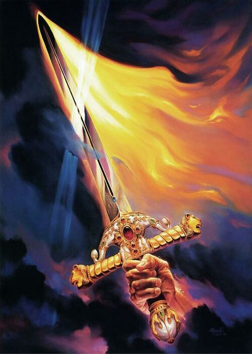

Not Peace, But A Sword
Think not that I am come to send peace on earth: I came not to send peace, but a sword.
For I am come to set a man at variance against his father, and the daughter against her mother, and the daughter in law against her mother in law.
And a man's foes shall be they of his own household.
He that loveth father or mother more than me is not worthy of me: and he that loveth son or daughter more than me is not worthy of me.
And he that taketh not his cross, and followeth after me, is not worthy of me.
He that findeth his life shall lose it: and he that loseth his life for my sake shall find it.
Matthew 10:34-39
- 